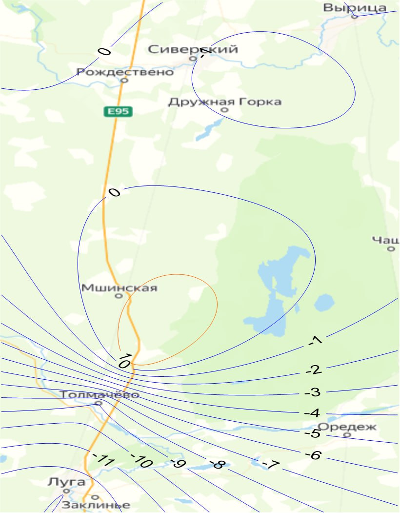
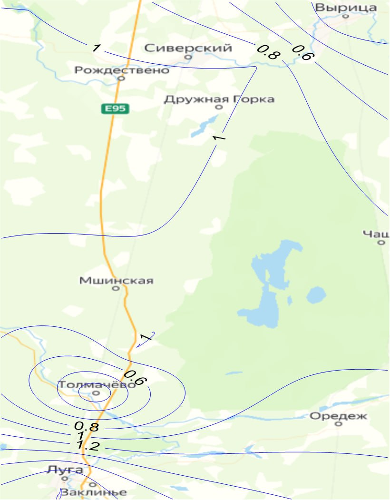

Изменение уровней воды на Северо-западе РФ на 2 декабря

Используемые посты
- р. Луга - г. Луга
- р. Луга - ст. Толмачёво
- р. Оредеж - пгт. Вырица
- р. Оредеж - д. Чикино
- р. Орлинка - уроч. Орлинка
- р. Ящера - д. Долговк
- р. Луга - г. Луга
- р. Луга - ст. Толмачёво
- р. Оредеж - пгт. Вырица
- р. Оредеж - д. Чикино
- р. Орлинка - уроч. Орлинка
- р. Ящера - д. Долговк
Метеостанции района:
- м/с Белогорка
- м/с Николаевское
- м/с Любань
- м/с Кингисепп
Изменение уровней воды на Северо-западе РФ

1 декабря